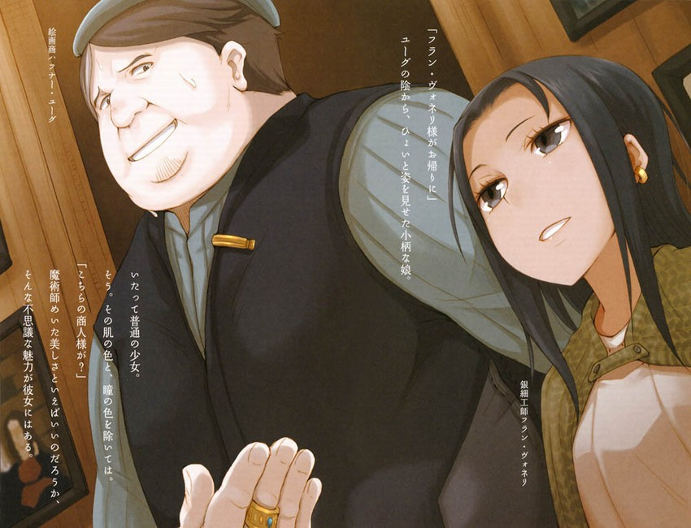

在蘋果之後，猶古又端來了暖乎乎的葡萄酒。
「能暖身子哦，請」
羅倫斯謝過之後喝了一小口。赫羅也喝了一小口——雖然臉上裝着平靜，心裡肯定覺得很難喝吧。只有柯爾手上捧着熱乎乎的山羊奶。赫羅側着臉、羡慕地看著柯爾的樣子總讓人覺得有點怪怪的。
「就是銀細工師芙蘭?波涅利對吧？」
「正是」
雖然猶古的話裡仍有那麼一點猶豫和含糊，不過馬上就像下定了決心一樣繼續說道。
「目前她就在這個鎮上」
赫羅皮笑肉不笑地看著猶古。這也不是不能理解。
不過，無論是誰，手中有這麼重要的搖錢樹的話，都會很自然地想藏起來。
羅倫斯輕輕敲了敲赫羅的膝蓋，然後這麼問道。
「是為了作畫或者製作細工嗎？」
「不是。她是在做為作畫和製作細工的預先準備。她平時喜歡東奔西跑，是個居無定所的人。前幾天我還以為要過一段時間才能聯繫上她了，結果她不知從哪裡又回來了，然後跟我說她打聽到了某個傳說」
「傳說」
羅倫斯就像是要確認他聽到的話一樣，重複了一遍。猶古點了點頭。
「那是一個在塔奇克流傳的傳說。北面有座雄偉的山脈橫斷北方大地，塔奇克則是山腳下的一個位於深山老林中的村莊。她似乎是為了追尋一個圍繞那片山林和山中湖泊的傳說而回來做準備的」
那片山林和山中湖泊的傳說。聽到這裡，羅倫斯忍不住看了看身旁。
不過赫羅並沒有往這邊看，所以眼睛反而和她旁邊的柯爾對上了。
「猶古先生對這個傳說有沒有什麼眉目？」
「當然，我也是聽說而已……不過正如你們所知道的那樣，我們擁有我們自己的情報網。在一定程度上知道這個傳說是真是假……」
「就是說，這個傳說很有可能是假的」
猶古像在說正是如此一樣地點了點頭。
「但是，她實在是個不好伺候人。決定把這個選作銀細工的題材後，就說什麼都不聽了。雖然很多人其實就是喜歡她這一點……」
「就是說沒有時間幫我們繪製地圖？」
「嗯，而且……」
「而且？」
猶古被這麼一反問，滿臉抱歉的樣子回答道。
「她的確為了尋找銀細工的題材而跑遍了北方地區，而且，比起我或者哈斯肯茲翁，她應該更清楚與你們想打聽的那個古老地名相關的事情。怎麼說，她都是在實地追尋過一個又一個傳說的人」
羅倫斯點了點頭，示意猶古繼續說下去。
光聽這幾句話，還不能肯定他到底想說什麼。
「嗯。只是，如果直接對她說『請幫忙畫張地圖』的話，我實在不知道她會不會乖乖地幫忙。我本人為了和她建立起目前的關係，也是經歷了多番周折，所以……」
猶古擦了擦自己苦澀的臉上滲出來的汗珠。
如果這不是在演戲的話，那麼看來芙蘭?波涅利的確是個難以捉摸的人。
「沒事，怕啥？」
可是赫羅根本沒理會猶古，露出小尖牙微微地笑了笑。
威脅一下就行了。應該是在開這個玩笑吧。
猶古的臉是笑了，可那並不是覺得有趣時的笑容。
說到底，手藝人其實就是【頑固】的代名詞。有些傳說中的鐵匠即使因鑄劍而一貧如洗，淪落到要啃食鐵鏽充饑的地步，也絶不造一把違背良心的劍。
這麼看來，突然找上門，開口就請別人幫忙繪製地圖的做法確實是太輕率、太莽撞了。
「我明白了。不過，至少也請你幫着我們說幾句話吧？」
猶古應該是抱著決不退縮的決心開口的吧。
「她，她真的是個很難伺候的人，所以……」
引見素不相識的人就已經是最大的讓步了。
這話讓羅倫斯陷入了思考。
天平的一邊是能否討好銀細工師，另一邊是為了猶古他們重新建立了新故鄉的哈斯肯茲的面子。而天平卻倒向了銀細工師那邊。
是說想要得到無條件的幫助，就必須從哈斯肯茲那裡拿到什麼信物嗎？還是說猶古並不是個那麼講情義的人呢？
亦或者芙蘭?波涅利就是個如此重要的銀細工師呢？
即使是羅倫斯的腦子也還是能做出這種程度的推斷。不過，作為成功的繪畫商，要在這短短的時間內看穿羅倫斯在沉默中都想了些什麼似乎並不難。
再怎麼說，如果不討好，那麼眼前還有個更加危險的傢伙。
猶古用能與求饒相匹敵的語氣，嚴肅地開口說道。
「為了買賣我的確想討好她。不過，這並不是為了錢」
做買賣從來都是為了賺錢。
看到羅倫斯投來好奇的目光後，猶古就像做好了覺悟似的，站了起來，走到一副畫的下面。
「畫中這片土地的古地名叫迭拉」
牆上的這幅畫比別的畫都大了一圈。畫中描繪了佈滿巨大岩石的荒地，還有一個在寸草不生的懸崖前高舉雙手向上帝禱告的隱者——要麼是猶古口中的那個迭拉的守護聖人，要麼就是在描繪聖人傳說了吧。
這種題材隨處可見。只不過，在羅倫斯看來，這幅畫的重點也不在聖人上，而是在背景上，所以感覺怪怪的。
然而就在羅倫斯這麼想的時候，猶古卻開口說出了一句令人十分意外的話。
「這裡就是，我的故鄉」
「！」
旁邊的赫羅把整個身體都繃緊了。
「只不過，很久以前這裡曾經是一片肥沃的土地。也沒有這樣的懸崖……這道懸崖，其實是爪痕」
赫羅用近乎沙啞的聲音問道。
「是逐月，之熊的？」
「是的。那是像我們這樣的存在絶對無法忘卻的過去。這幅畫是在得到波涅利小姐的協助後才畫出來的。我在幾十年前就已經開始在這裡做畫的買賣了。不得不捨棄的故鄉，在那場大災難後面目全非的故地。我為了故鄉的夥伴們，還有其他有相似遭遇的人們，收集並販賣着這類畫。說這不賺錢那是假的，不過錢並不是我的主要目的」
就像那裡有扇巨大的窗戶一樣，猶古的目光透過畫面，久久地停留在畫中的景色上。
「而且，這幅畫上面描繪的景色，現在也已經成為過去了。聽說是發現了金礦……最諷刺的是，發現礦脈的不是別人，而是為了畫這幅畫而僱來的嚮導。不過，即使沒人發現，我們熟悉的風景還是會在風中剝落，在水中消融，總有一天會變成一片陌生的景象。很多畫中的風景已經消失了，而且還在繼續消失。擱置在那邊那個房間的畫是這樣，那些已經被裝飾在教會或者豪宅裡的畫也是這樣。再說，即使是畫也有保存的期限」
猶古輕輕地撫摸着畫框，說完了這番話後眼睛仍戀戀不捨地看著那幅畫。
這裡是定格流逝的時光並將其保存下來的地方。
即使是對人類來說漫長的歲月，在他們看來，也還是太過短暫了。
可是，往昔的回憶卻深深地留在記憶裡，結果只能眼睜睜地看著眼前的景象越變越陌生。
猶古轉過頭來看著這邊，苦笑着。目光應該是落在了赫羅身上。
羅倫斯沒有回頭看赫羅。因為他覺得只要一回頭就會傷害到她。
能和赫羅說得上話的，就只有活過了同樣歲月的猶古了。
「可以的話我也很想幫助你。這裡並不是僅僅為了我們這些羊而開設的。來我們這裡的還有其他顧客，比如說馴鹿，兔子，狐狸，甚至鳥類」
旁邊傳來赫羅衣服的摩擦聲。
她在幹什麼還是別問的好。
「不過，芙蘭?波涅利的知識和能力是他人無法代替的。被譽為過目不忘的記憶力，將生命置之度外的目標感，還有為了將景色凝聚在畫布上而傾注所有心血的熱情。我們不能失去她。 因為，我們根本就沒有時間了」
猶古那堅定的眼神中，有着那種自私的人所沒有的光彩。時間無情地擦除着他們曾經活在這個世界上的痕跡。而他的工作，則是在這個過程中，試圖把那些痕跡記錄下來。
只是，羅倫斯很在意猶古那句話的意思。
根本就沒有時間了。是說景色變化得太快的意思嗎？
「沒有時間了？」
「是的。我們不得不抓緊時間。需要波涅利小姐描繪的景色太多了。可是，她的生涯卻是那麼的短暫。我經常這麼想，要是她像我們一樣能活那麼久就好了」
聽到這話，吃了一驚的恐怕不止自己一人。
本來還以為芙蘭?波涅利這個銀細工師也和猶古他們一樣，是個特別的存在呢。
不過，既然如此，只要這樣問就好了：
那麼在意時間的話，你們這些活過悠久時間的羊為什麼不自己拿起畫筆來？
「我也算是一個商人」
羅倫斯下意識地摸了摸自己的臉。看來自己心裡在想什麼全部都寫在臉上了。
猶古低着頭，小聲地嘆了口氣後，眯着眼睛看著牆上的畫說道。
「我明白你想說什麼。其實，過去也有拿起筆——雖然以前都是些版畫——前往東方、北方，或者是連以前的影子都沒留下的南方作畫的同伴。可是，即便是他們，也不是不死之身」
赫羅是寄宿在麥子中的狼之化身。她曾說過，如果失去了那些麥子，那麼她自己可能也會消失掉。而且，說不定她也不是長生不老的。
可是，猶古所說的不像是壽終正寢的意思。
因為在羅倫斯眼中，他們——包括赫羅——似乎並沒有壽終正寢的概念。
猶古的目光是那麼的平靜。
那是一雙飽經歲月風霜的賢者才有的眼睛。柔和，卻很深遠。
「執筆周游列國，遍歷各地事蹟。本來他們就是被使命感驅使才拿起了筆。然而在他們眼中的人類砍倒了森林，截斷了河川，削平了高山，填埋了低谷。久而久之，當無法再坐視不理的時候，手中握著的筆就變成了利劍」
以前也曾聽說過。
柯爾在旁邊入神地聽著。
「不過，那到底是以卵擊石。其中有一個人被教會處于火刑，另一個被大軍吞沒，還有一個則在最後嘆息自己的力量是多麼的弱小……還有很多其他人，都沒來得及留在我們記憶中，就像泡沫一樣的消失了。人類啊，還真是……啊，失禮了」
「哪裡」
羅倫斯這麼回答道。猶古悲傷地笑了笑。
「人類是強大力量的集合體。世界的霸權早在遠久的往昔就落入了他們的手中。而我們的時代則早已過去了。雖然不願承認這個事實的同伴一個又一個地站了出來，但是他們到最後都僅僅成了羊皮紙上的傳說而已。現在，就連這些記載着傳說的羊皮紙也淪落到被蟲鼠蠶食的地步了。留下的只有我們這些——而且正是人類語言中所指的——羊。包括我在內，大家已經連拿起筆的勇氣都沒有了。從最有勇氣的同伴開始，一個又一個地離我們而去……這實在是太殘酷了」
就算不顧作為同胞的哈斯肯茲和身為狼之化身的赫羅，猶古也要保全作為人類的芙蘭?波涅利。羅倫斯現在終於明白這是為什麼了。
猶古他們肯定不會對芙蘭?波涅利說出自己的真實身份。
那麼，能輓留她的手段不多。只要能讓她幫忙作畫，那麼肯定拋眉獻媚、百依百順都在所不惜。
能讓羅倫斯一行確認真的有這麼一個人，就已經是他們最大的讓步了。
「確實蠻殘酷的呀」
赫羅說著，喝了口手上那杯她一點都不喜歡喝的葡萄酒。
「汝看到咱之後那麼驚慌失措……也是……因為這個吧？」
羅倫斯轉頭看著赫羅，柯爾也轉頭看著赫羅。
來這裡買畫的有鳥有鹿，可就是沒有狼。
有着尖牙利爪的狼同樣有着過人的膽量。那麼最先站出來的必定是他們。
而且，最先死的也是他們。
一直都看著赫羅的猶古慢慢地點了點頭。
「的確，就是回事」
「呵呵，嘛，沒事。不是這樣的話，咱反而會傷心呢」
要說與赫羅賢狼這個別稱相符的，肯定是指這種清高吧。
肯定也是在這時候開始，猶古不再用害怕的目光看著赫羅了。
「……您真堅強。像我，還曾想過自己如果不是羊，而是樹木或者石頭那該有多好」
對話的最後，赫羅毫不害羞地這麼說道。
「呵，咱還真不會有這種想法。要真成了樹木或者石頭，就不能和這些傢伙一起旅行了啊」
猶古也笑着答道。
「活在人類的世界裡也還是蠻有趣的」
「嗯，儘是些有趣的傢伙」
聽到這裡，這些有趣的傢伙裡的其中一人只能獨自苦笑了。
手中的葡萄酒是酸的。這應該並不是偶然吧。
此刻，羅倫斯就是這麼想的。
-------------------------------------------------------------
金，銀，銅，鐵，錫，鉛，黃銅，石塊。
俗話說得好，玉石混交，這樣一來東西的價值就真的難以分辨了。
據說芙蘭正在鎮上到處逛，那麼在她回來之前，羅倫斯他們就由猶古領着來到倉庫參觀。倉庫裡不但有畫作，還塞滿了各式各樣配合畫作一起出售的工藝品和裝飾品。
「其實也有很多是假貨……這邊這個是拉伸羊皮紙的伸展棒。嗯……是鍍金的。哦，我想起來了，的確有這麼個東西，怎麼樣？」
看來連倉庫的主人，哈弗那?猶古本人也無法完全把握這裡到底都有些什麼東西。他僅僅是用手掂了掂伸展棒的重量就做出了這樣的判斷。
雖然猶古為了赫羅這個跟他相似的存在說出了芙蘭的事情，但是，他不僅僅是羊的化身，同時還是一名商人。
人情當然會認真地算清楚。
一邊把赫羅和柯爾領到倉庫裡看有沒有約伊茲的畫，一邊緊緊地貼著羅倫斯。周游列國的行商人雖然沒有什麼購買能力，但卻有各地市場的第一手價格情報。也就是說，他想讓羅倫斯看看，在這些堆進倉庫吃灰塵的東西里有沒有什麼值錢的傢伙。而羅倫斯則覺得自己變成了一隻拿鼻子翻地找蘑菇的野豬。
的確，不同的城鎮流行的貨物也不同。有的城鎮只要貨物上有狼的標誌就是搶手貨，有的城鎮只要東西是金色的，不管真金假金還是純金鍍金都能賣出天價。反正羅倫斯在旅行中道聽途說了不少傳聞，現在來到這個充滿活力的鎮上，也不妨全部都吐出來。
來到充滿活力的城鎮就跟喝醉了酒一樣。
經常能見到有人賣想都想不到的東西。在倉庫裡堆了這麼多傢伙的猶古看來，這裡簡直就是黃金打造的垃圾箱了。
「嘛，我知道的大概就是這樣了」
「哦。哎，真是太感謝了。雖然我光坐在店裡也能收到各地的情報，但給我帶情報來的人也不全是商人。所以，對做買賣有幫助的情報還真不好收集」
猶古剛纔在羅倫斯說的過程中還拿出了筆，像個模範商人一樣地在作廢訂單的空白處作筆記。如果那神采奕奕的表情不是裝出來的話，那麼肯定是準備大賺一筆了。
羅倫斯也是個商人。向猶古這種非人的存在賣個人情肯定虧不了。
不過這話如果給赫羅聽到了肯定要鄒眉頭。
羅倫斯這麼想著，眼睛突然被貨物堆裡一個東西吸引住了。
「……這是……」
「哦。這個呀，原來放到這裡來了」
羅倫斯在木箱子的空隙間把它取了出來後，猶古愉快地笑着把手伸了過來。
這到底是拿來幹什麼的呢？真是百思不得其解。
遞到猶古手中的是個金色的蘋果。這要給赫羅看到了肯定會大笑吧。
「這個是用來幹什麼的呢？」
「就是那個啊，像這樣，能用來暖手」
「暖手？」
說著，兩手接過猶古遞迴來的蘋果捧了捧，的確有點暖意。
「應該是給喜好虛榮的商人做的吧。要麼用暖爐加熱，要麼就找個小鬼用體溫暖起來，然後一邊拿這個暖手一邊寫字。如果冬天出門旅行時用的話，手貼著它不想放可就要出事了」
那可真的要出事啊。
不過，放在馬車上面的話，赫羅可能會像母鷄孵蛋一樣地把它抱在懷裡。說不定還是蠻有用的。羅倫斯不由得這麼想了想後，馬上回過神來，慌慌張張地轉頭看了看赫羅。
怎麼能被這種傻乎乎的商品釣上鈎呢？
羅倫斯把蘋果還給了猶古。
「說實在的，告訴我這麼多有用的情報，還真是要謝謝你啊」
結果，羅倫斯所說的，無論大小，猶古都細緻地記了下來，一直到天都黑了才滿足。不過，聽的人能這麼高興，那麼就算撇開利益得失的問題，說話的人心情也不會差。
「哪裡，是我們麻煩你了」
「事情辦完之後，請務必給我一個款待你們的機會」
這樣的對話還真的像是跟一個普通的商人打交道。
羅倫斯笑着點了點頭，伸出手來和猶古握了握手。
「可是，他們兩位好像還在看畫作……」
猶古一邊用力直起他那圓圓的身體，往倉庫裡面看著，一邊這麼說道。
赫羅站在那裡一幅一幅地翻看著，不時和身旁的柯爾說著什麼。
猶古看著看著就不吭聲了。
看著猶古那巨大的背影，就連羅倫斯也知道他正在想什麼。
「不介意我問問你們的關係吧？」
也難怪他會在意。
赫羅現在肯定豎著耳朵在聽，不過似乎沒什麼反應，那麼也沒必要隱瞞。羅倫斯一邊這麼想，一邊答道。
「我本來是在南方行商的行商人。赫羅是我在行商途中偶然碰到的」
「是這樣」
「她在很久以前受友人所托，一直照顧着一個麥子的大產地。但是，隨着時間的流逝，逐漸被村民們忘卻了，所以她想回到以前的故鄉那。正好那個時候我駕着馬車經過，她就擅自鑽到車裡面了」
猶古好像覺得很有趣地笑着。不過可以看得出來，那是一張冷靜的笑臉。
對他們來說，這肯定就像是自己的事情一樣吧。
「她離開故鄉也有幾百年了，所以已經忘記具體在哪裡了。因此我們現在正在到處尋找線索。柯爾也是旅途中遇到的。他是從北邊一個叫必伮的地方來的」
「喔？必伮？」
猶古有點吃驚地眨了眨眼睛，然後回頭看了看赫羅他們。
「這又是個好遠的地方啊……不過，原來是這樣啊。我終於明白為什麼哈斯肯茲翁會向你們說起芙蘭?波涅利了」
羅倫斯擠出個笑臉。雖然這些都不是好笑的事，但是如果哭喪着臉說的話，赫羅肯定會生氣的。
「北方是征服和侵略的舞台，地名經常改變。或許，即使我沒聽說過約伊茲，也可能聽說過同一片土地的另一個名字呢」
羅倫斯點了點頭。
可是，猶古接下來說的話實在是讓他吃了一驚。
「你們剛纔說想要北方的地圖，我還以為是要去參與北方的紛……爭……」
本來只是打算開個玩笑的猶古看到羅倫斯這個樣子後，不由得也吃了一驚。
「那……那個，難道……」
「你是指迪巴瓦商會的那件事嗎？果然是真的？」
收集畫作的同時肯定也收集到了情報。
而且，穿過迪巴瓦商會所在城鎮的羅姆河正是在這裡入海的。
「不，這個，呃……要問是真是假的話，只能說我們根本沒有確鑿的證據。因為那裡畢竟是個傳聞不斷的地方……」
「猶古先生你是怎麼想的？」
猶古就像把玩笑當真的人一樣，一臉難辦的樣子。
只不過，他馬上就明白這是搪塞不過去的，於是不大情願地這樣開口說道。
「我本身……對此並沒有興趣。這就是我的真心話」
羅倫斯還以為是自己聽錯了。
「沒有，興趣？」
「是的。我們當中也有不少這樣捂着耳朵閉上眼睛的人。這就跟逐月之熊那個時候一樣。人們在把能挖的都挖光之後，自然就會離開。反正景色也不是永遠不變的。即使變得面目全非了，古老的土地也不會在這裡世界上消失。所以……」
即使是平時低頭啃青草的羊，抬起頭來，眼睛也能看到不少世界的哲理。
責備猶古是喪家犬很簡單。
但是，即使是這樣的想法，也不失為一種真理。沒人能對這種現實的想法說三道四。
旅途中羅倫斯也長了不少見識。
他看過被傭兵襲擊的村莊，還有被領主壓榨的城鎮。反抗一點好處都沒有，再說他們根本就沒有反抗的能力。在這種時候，正確的做法就是乖乖地等暴風雨過去而已。
「所以，我反而沒去收集這方面的消息。我不像哈斯肯茲翁那麼堅強，要是知道了的話肯定就放不下心來了。然後就會變成像你、赫羅還有柯爾現在這樣了」
猶古這麼開玩笑地說道，大概是想就此打住這個話題吧。
確實，知道了之後就會想瞭解清楚，瞭解清楚後就會忍不住出手。
這應該是在激烈變化的世界中，過安寧日子的訣竅吧。
無論是羅倫斯還是赫羅都沒有擾亂他們安寧的權利。
「抱歉，問了些這麼怪的問題」
「哪裡，沒能幫上你的忙。那麼接下來，意下如何？要不要先回房間？」
猶古說完後，羅倫斯看了看赫羅。赫羅抬起頭，笑着搖了搖頭，指了指把頭埋在畫堆裡的柯爾。
看來還在找。
「我一個人先回去吧」
「是這樣啊。那麼，我去給你端些能暖身子的東西來」
作為商人，羅倫斯對這話着實是吃了一驚。
倉庫裡面可是堆滿了昂貴的畫作，還有真金白銀的工藝品。
把素不相識的人留在這樣的倉庫裡，着實需要不小的勇氣。
羅倫斯條件反射地這麼想著。猶古笑着說道。
「要真想偷的話，把我的腦袋咬掉不是更快嗎？再說，森林裡的居民是不會說謊的」
雖然這看上去像是在拍赫羅的馬屁，但是那也太輕率了吧？
羅倫斯老實地點了點頭。
「失禮了」
----------------------------------------------------------
猶古和羅倫斯聊了幾句之後，就回店面忙活去了。
羅倫斯獨自在客廳等芙蘭回來。隨手拿起一本旅行記消磨時間。據說寫出這本書的是個曾經環球旅行一周的商人。正如猶古十分重視羅倫斯口中有關各地的情報那樣，如果真的有人周游了世界，那麼在旅途中收集到的正確情報可就比任何商品都要寶貴了，不可能會有人把這麼重要的東西公諸于世。也就是說，這本書僅僅是寫成旅行記形式的娛樂讀物。不過內容還是蠻有趣的。
羅倫斯一邊翻，一邊在心裡笑話書裡面的誇張情節。
就在這個時候，眼睛和書之間飛過了一個金色的東西，咚的一下砸在了肚子上，把羅倫斯嚇了一跳。
抬頭一看，赫羅就像弄掉了東西一樣地彎着腰。再低頭看了看肚子，是剛纔在倉庫裡發現的金蘋果。
「這蘋果不好吃嗎？」
拿起蘋果，感覺暖暖的。
大小也剛好和赫羅的臉蛋差不多。正這麼想著，蘋果被赫羅一下子拿了起來。
「汝們人類最喜歡金子了，但是所有東西都變成金子了也不好辦吧？」
物極必反，滋潤萬物的雨下太多了也會像乾旱那樣讓人頭疼。
不過，羅倫斯也是個商人。輕描淡寫地把話切了回去。
「真要變成那樣的話，我就找不是黃金的東西高價賣出去好了」
赫羅哼了哼鼻子，在羅倫斯旁邊坐下。
看來她心情不怎麼好，沒有梳理尾巴上的毛，而是一個勁地捧着那個金蘋果玩。
「柯爾呢？」
被這麼一問，赫羅歪了歪腦袋。
耳朵往兩邊耷拉著的時候，就是心情不怎麼好的時候。
看來是罕有地把柯爾一個人撇在倉庫裡了。
那麼可以想象的原因也不多。
「沒找到麼？」
約伊茲的畫，或者是那附近的畫，亦或者是赫羅有印象的景色。
她可能覺得那裡有這麼多畫，至少有一張也不奇怪吧。
事情總是這樣，如果一開始就不抱什麼期望的話，那麼找不到也不會怎麼失望。真正難受的，是抱有期望卻找不到的時候。
而且，柯爾肯定找到了不少自己見過的景色。
「……唔」
玩弄着金蘋果的赫羅微微點了點頭。
「現在好戲被擱後面去了，這不更好了麼？」
這麼說赫羅肯定會生氣。不過羅倫斯反而這麼說道。不出所料，赫羅的耳朵一下子就豎了起來。
可是，沒多久，又慢慢地耷拉下去了。
然後就像瓶蓋突然被拔出來一樣地說道。
「咱……錯了嗎？」
「錯了？」
在羅倫斯反問之後，赫羅輕輕地點了點頭。
「那只羊，猶古不少說了嗎？摀住耳朵、閉上眼睛的也不在少數……」
羅倫斯把頭轉了回來，合上了書。
書裝訂得很漂亮，內容也很有趣。就算再過幾百年，人們應該也還會記得這個商人的名字吧。
「你是說『知道了就會扯上關係』？」
赫羅點了點頭。
這傢伙看起來冷靜，其實血氣方剛，別人遇到麻煩時肯定不會撒手不管。如果給她看到人類簇擁成群地湧入山林，伐樹開墾，獵殺動物，打算讓一切都翻天覆地，即使那裡不是約伊茲，她可能也會加入到抵抗勢力中去。
結果或許能成為傳說流傳後世，但是卻不可能贏得勝利。
倘若能獲勝，那麼早就有人去做了。
「咱啊，雖然嘴巴上老是說這說那的，但是心裏邊總覺得自己有那麼一點特別」
會用這種似乎非常愉快的語調說話，應該是為了掩飾羞澀吧。
「無論什麼事，咱只要露一露牙，基本上就能擺平，就能不講道理。咱以前就是這麼想的。可是呀」
赫羅滿臉空虛的笑容，一下子轉過身來搶過了羅倫斯抬起來的手，像帶圍巾一樣繞過自己的脖子，然後緊緊地抱住了。
「那些畫裡面沒有咱記憶中的景色，這說明什麼？」
放在倉庫裡面的，要麼是預訂畫作的草稿，要麼就是為那裡的居民以後可能來買畫而保存起來的畫作。
那麼，要這麼推測就一點都不難：
赫羅沒看到眼熟的畫，就是沒有人來預訂約伊茲的風景畫。這很容易讓人聯想到赫羅的同伴已經踏上了永遠的旅程了。
要說根據？
肯定有很多狼因為有尖牙利爪而自信地參加了戰鬥。或許他們逃過了逐月之熊的那一劫，但世界上總是充斥着各種沒有天理的事情。只要手握武器，那就肯定會有站起來反抗的一天。
躲過了所有這些災難的，是手中沒有武器，除了逃避之外別無選擇的人。他們當初或許被當做了膽小鬼。
但是，現在深深地根植于這個世界上的，也正是這些膽小鬼。
「害怕知道所以摀住耳朵閉上眼睛？這種笨蛋想法還真是讓人笑話。可是現在，這店裡的主人是誰呀？有那麼多同伴的是誰呀？現在還在為慰藉其他同伴而努力着的又是誰呀？比起他們，咱……」
赫羅的指甲深深地陷進了羅倫斯的手腕裡。
「咱們到底算是在幹什麼呀？」
赫羅應該不是在哭。
她現在肯定不是覺得傷心，而是覺得自己很沒出息吧。
世界正如湍急的河流一樣滾滾向前流去。自己不但只能在河畔不知所措，而且就連立足之地都可能被一同沖走。
怎麼可能不咬牙切齒呢？
羅倫斯用那只繞過赫羅脖子的胳臂把她摟進懷裡。
「哪會有人知道什麼才是正確的啊」
可能是因為剛從倉庫裡出來的緣故吧，赫羅的頭上有股灰塵的味道。
「你自己，原本已經有為了信念將生死置之度外的覺悟了，不是嗎？」
赫羅沒有動靜。
可是過了一會，還是慢慢地點了點頭。
「想一想就會明白了，如果現在埋在土裡的是自己會怎麼樣。你不是賢狼嗎？」
如果同伴還能掛唸著自己的話，那怎麼可能不高興呢？
不過，老獃在墓碑前也不行。
後悔也是如此。是希望時間倒流回到過去再做掙扎，還是努力在以後避免重蹈覆轍？這是兩個完全不同的想法。
赫羅點了點頭。
雖然既不是小孩子，也不是傻瓜。
但是要獨自駕馭好所有的情感還未免太難了點。
「而且，至少還是搞明白了一點」
聽到羅倫斯這麼說，赫羅的耳朵好像嚇了一跳似的動了動。
羅倫斯笑了笑。這並不是在笑赫羅。
「你一難過，我也會難過起來」
以前獨自行商的時候，既沒有可以說這種話的對象，也沒有對自己說這種話的人。
參與危險買賣時的心態就是：反正原本就是孤單一人，即使獨自客死異鄉，也跟以前沒什麼兩樣。
雖然死了的人永遠都躺在墳墓裡。
但是，活着的，卻只有眼前的人。
「真是個大笨蛋」
赫羅這麼嘟囔着。也不知道是在說誰。
估計既是指自己，又是指羅倫斯吧。
「的確是大笨蛋。那麼，接下來該做的是什麼呀？」
赫羅一下子愣住了。
把柯爾一個人留在了倉庫，肯定不單單是自己沒找到熟悉的景色，而柯爾卻找到了這個理由這麼簡單吧。按照柯爾的性格，肯定到現在都還在拚命地找呢。
而且，越是找，找不到的這個事實就越是重重地壓在兩人心頭上。雖然這也不算亂髮脾氣，不過被撇在倉庫的柯爾肯定不好受。
赫羅開口說道。
「咱去道歉」
「去吧」
聽到羅倫斯這好像家長一樣地回話後，從手臂下鑽出來的赫羅露出小尖牙笑了笑。
時間無法倒流，什麼是正確的選擇也絶對無人知曉。
那麼，至少享受此刻，珍惜現在。
羅倫斯能說的也就只有這些，其他的只有看赫羅怎麼判斷了。
羅倫斯這麼想著，重新翻開了手上的書。
-------------------------------------------------------------------
「芙蘭?波涅利小姐回來了」
羅倫斯輕輕碰了碰赫羅的膝蓋，站了起來。
轉過頭看到的是猶古的笑臉，不由覺得有點可疑的。
如果他站在一隻露出尖牙的狼旁邊，肯定就不會這麼笑了吧。當羅倫斯這麼想著的時候，一位體型嬌小的少女從猶古的身後走了出來。

看起來與柯爾相去不遠，那麼和赫羅站在一起應該也差不多吧。
雖然不願意承認，可是當看清楚她的樣子後腦子一片空白的原因，卻是她的容貌。
既沒有赫羅一樣的獸耳，也沒有哈斯肯茲頭上的巨大羊角。
是個很普通的少女。
對，除了那皮膚和瞳孔的顏色之外，確實很普通。
「是這邊這位商人嗎？」
悅耳的聲音讓人聯想到良好的教養。
美麗有很多種。而芙蘭的這種美麗羅倫斯還是第一次見：漆黑的頭髮，漆黑的眼睛。褐色的皮膚是那種南方沙漠居民特有的膚色，就像潛藏着魔術師般的氣質那樣，從她身上能感受到這種不可思議的魅力。
那種在被稱作熱沙的地獄中頑強地存活下來的居民特有的氣氛，讓人覺得就算她看到了赫羅的真面目也不會害怕。
羅倫斯倒嚥了一口口水後，終於開口說道。
「我是克拉夫特?羅倫斯」
芙蘭?波涅利笑着緩緩地點了點頭，自我介紹道。
「我是芙蘭?波涅利」
「還是坐下說話吧」
猶古這麼一說，羅倫斯他們都各自坐下了。
柯爾被赫羅拽着衣服才終於坐了下來。他肯定是被芙蘭那不可思議的氣氛所迷住了吧。
「那麼，請問有何貴幹呢？」
雖然沙漠的居民說的是完全不同的語言，但是芙蘭說的卻是這裡流通的語言。
而且發音清晰，看來相當有教養。
擔心她偏執可能是杞人憂天了。
羅倫斯在商人的笑臉下面這麼想著，開口切入正題。
「我們其實正要去北方地區的某個地方。可是我們只知道那個地方的古地名而已。所以，我們來到這家商會，想請熟悉北方地區古代傳說的你幫個忙」
芙蘭一直認真地聽著。
羅倫斯說完後，芙蘭平靜地問道。
「是哪個地方？」
「約伊茲」
聽到羅倫斯的話後，芙蘭的眼睛眯了一下。
「還真是個偏遠山區的古地名呀」
「你知道那裡是哪裡？」
羅倫斯一半演技一半真心地這麼問道。可是芙蘭紋絲不動。
就像占卜師那樣不為任何事情所動。
「知道是知道，不過，會畫北方地圖的人很少，所以很難得」
「這是當然，我們會提供足夠的報酬」
剛這麼一說就被赫羅踩了一下，可是已經晚了。
赫羅肯定早就看穿芙蘭的本性了。
「足夠的？」
芙蘭好像有點吃驚地說道。
猶古在芙蘭坐著的長椅子後面，用手蓋着臉。
「那麼就不客氣了。盧米歐尼金幣五十枚左右吧」
說得就像不擅長交涉的手藝人那樣。
真的有這麼大意麼？羅倫斯這麼自問道。可是再怎麼自問時間也不會倒流。為了區區一張地圖，沒有理由付五十枚盧米歐尼金幣。
這基本上就是騙小孩子一樣的回絶方式。
真沒想到自己竟然中了這招，也沒想到芙蘭會出這張牌。羅倫斯現在是一句話都說不出來。
而且現在是在赫羅面前。
羅倫斯急着想開口。可就在這時，傳來了芙蘭那道清涼的聲音。
「不過，看情況也可以免費幫你們畫」
「啊？」
一不小心，面具掉了下來，露出了心裡話。赫羅在一旁，好像拿羅倫斯沒辦法一樣地低頭嘆了口氣。
車輪一旦脫軌就很難把它重新扳回去。
可是，芙蘭眼睛看著的明顯不是羅倫斯，而是赫羅。
「這邊這位穿得好像修女一樣」
「……她叫赫羅」
赫羅好像也沒想到芙蘭是對自己說話。羅倫斯稍稍愣了下，驚訝地答道。
「原來是叫赫羅啊。初次見面，我是芙蘭?波涅利」
赫羅是以賢狼自稱的狼。
狩獵的時候頭腦冷靜，從來不操之過急。
「咱，怎麼了？」
「嗯，如果是修女的話，我有個請求」
聽到這句話後最慌張的，要數知道芙蘭企圖的猶古了。
屏住呼吸想跟芙蘭說話的猶古，卻被芙蘭的一隻手制住了。
不好伺候的手藝人。
眼前就有一個這樣的模範。
「咱力所能及的話」
聽了這話，芙蘭沒有微笑，而是歪了歪腦袋。
「並不是什麼難事。赫羅，羅倫斯，還有……」
「啊，啊，我，我叫柯爾」
聽到柯爾這麼說後，芙蘭點了點頭，繼續說道。
「還有柯爾一起」
到底想讓羅倫斯他們幹什麼呢？
「有你們三個人，就肯定沒問題了」
猶古朝這邊拚命地使眼神想叫羅倫斯他們不要答應。
芙蘭接着這麼說道。
「我想請你們和我一起去塔奇克調查」
「……就是，那裡嗎？」
「是的。猶古已經跟你們說了呀？那就是我回這個城鎮的理由。希望你們能和我一起到那個村莊調查那個傳說」
就這麼簡單？羅倫斯還沒反應過來。可是從猶古那坐立不安的樣子看來，事情應該沒她所說的那麼輕鬆吧。
羅倫斯並沒有因為剛纔的失誤而怯場。明知可能會讓芙蘭不快，他還是沒有馬上回答。
而在這個時候開口的，不是別人，正是赫羅。
「然後你就會幫我們畫地圖對嗎？」
「嗯，前提是能收集到情報，並且能證明那些情報是真的」
也不是不能理解赫羅掛在嘴邊的笑容。
芙蘭是個聰明的女孩，足以引起赫羅的興趣，並點燃她的對抗心理。
能收集到情報，並且能證明那些情報是真的。平時的赫羅要是聽到這麼曖昧的話，肯定會笑着讓說話的人說清楚，根據情況還可能會動用武力。
而這次，赫羅連問都沒問，就繼續說了下去。
「那麼就這樣說好了」
「有勞各位了」
芙蘭一下子就低下了頭。然後抬起頭，站了起來。
對旁邊似乎想輓留她的猶古面無表情地問道。
「外出的準備怎麼樣了？」
「啊，已，已經準備好了……」
「那麼明天出發吧。羅倫斯，會駕馬車嗎？」
點了點頭後，芙蘭好像還想說什麼似的。為了輓回點面子，羅倫斯搶先開口說道。
「明天出發沒問題」
芙蘭微微笑了笑。
可能是覺得羅倫斯這死要面子的舉止很有趣吧。
而且，是少女特有的那種天真的微笑。羅倫斯再次認識到自己剛纔是多麼的大意。
如果僅僅是面無表情的頑固，那對付起來倒是很簡單。
真正難對付的，是能靈活運用笑臉的人。所以赫羅才這麼棘手。
要是知道她能這麼笑的話，剛纔肯定會更認真地對應。
看來聽了基曼和猶古的話之後，先入感太強了。
「猶古」
聽到自己的名字後，猶古使勁直起圓圓的身體。
「晚飯端到我房間裡吧。我還要為明天做準備」
「好，好的。那個，可是……」
「可是？」
赫羅也經常這樣皮笑肉不笑。
猶古閉上了嘴，乖乖地點了點頭。
「那就麻煩你給赫羅他們作詳細說明了」
在丟下了這樣一句話後，芙蘭離開了房間。
--------------------------------------------------------------------------
身旁的那條尾巴漲得鼓鼓的。
但臉上卻是笑容滿面。這就更可怕了。
羅倫斯知道他不能找藉口。
「抱歉」
「大笨蛋」
說完，還是不肯看羅倫斯。
所謂神不招惹沒報應。柯爾戰戰兢兢地縮到一邊。而赫羅則還是那個樣子，也不開口說話。
可能是覺得這麼沉默下去不太好吧，開口說話的是猶古。
「那種大膽的性格還有不容反駁的微笑，我也是因此吃了不少苦頭啊。而且，她骨子裡真的是既偏執又頑固的銀細工師。以前我為了請她幫忙，害得我不但在城裡面到處找，還在山上到處找。最後，她在山上出了事的時候被我救了，才終於肯聽我說話。所以……那個，雖然是個曖昧的條件，不過我覺得能站在對等的立場上說話就已經很幸運了」
最後那句話明顯是對赫羅說的。
赫羅深深地點了點頭，才終於卸下了那副可怕的笑容。
「呃……那麼，塔奇克村那裡到底有些什麼呢？」
猶古對鬆了一口氣的羅倫斯搖了搖頭。
「就是個普普通通的村莊而已」
「如果是這樣的話，那為何……」
猶古低頭看了看地板。然後抬起頭，小心翼翼地說道。
「那些圍繞森林和湖泊的傳說並不是什麼大不了的東西。所謂天使沿著從湖中流出的河水漫步，天空中傳來了野獸的嚎叫，一扇黃金門同時打開，天使有如乘着逆流的瀑布一般，朝着黃金門飛去」
聽起來的確就像普通的傳說一樣。
但是猶古繼續說道。
「除此之外，還有另一個的傳說」
「還有另一個？」
這麼一反問，猶古點了點頭，老實交代道。
「魔女傳說，應該可以這麼說吧。具體我也不是很清楚。聽說這在河流的上游，也就是雷諾斯那一帶很有名。好像是被叫做魔女的修女來到塔奇克並住了下來的傳說。我覺得是謡言。統治塔奇克那片土地的領主是正教徒，所以肯定會否認有魔女在他們那裡。不過……」
「嗯，原來是這樣。所以村裡的人會異常地排外。是這樣嗎？」
猶古點了點頭。
「剛纔她之所以拜託你們同行，應該也是知道，如果自己一個人去到村裡，肯定是打聽不出消息的。不說別的，僅僅她的膚色在這附近就已經夠罕見的了」
也難怪遠遠比人類長壽的猶古會這麼說。
就連羅倫斯也很少有機會見到褐色皮膚的女孩子。
「她是沙漠的居民嗎？」
「聽說是這樣。不過懂事的時候雙親都已經不在了。好像是被拉昂迪路公國一個富有的貨幣兌換商撫養大的。在那之後也不知什麼原因就成了銀細工師。她以前開玩笑說曾經當過奴隷。不過你們也知道她那性格，實在搞不清是不是真的……」
羅倫斯也很明白猶古為什麼會苦笑。聽過芙蘭說話的人，都會覺得她出生在有一定社會地位的家庭中。當然，就算是奴隷，待遇也是看主人的。有的人可能會被賣到心地善良的富有家庭；可是反過來，也有明明是養子卻被當成奴隷使喚的人。
只不過，和基曼的話也有能對上的地方。即使有點出入，也不能說完全是假話。
「看來她的膽子也是相當的大啊」
「是啊，所以，我老覺得她可能是哪個勇猛的戰士家庭的孩子……總之是個迷一樣的人。啊，剛纔我說的這些話……」
「嗯，我們當然不會說出去」
猶古點了點頭後，羅倫斯切回正題。
「關於那個村莊，猶古先生你好像很擔心，真的有那麼危險嗎？」
因為各種各樣的理由而變得排外的村莊其實有很多。
在平時很少有外人來的地方，單單作為外人就足以引起村裡人的懷疑。如果傳聞這個地方有魔女居住的話，那麼外人看起來就個個都像告密者了。
「說實話，我也不清楚。而且那裡不是什麼能做買賣的地方，村裡的人很少進城，更沒有什麼城裡的人會想去那個村。老實說，那個村就像是個罐子：印象中曾經拿它裝過食物，可又不記得是什麼時候裝了什麼進去了」
這個比喻確實巧妙。
打開蓋子可能會發現裡面都面目全非了，所以就更加不想打開了。
「怎麼，有咱在汝也覺得危險？」
赫羅的這句話打破了羅倫斯和猶古之間的那種沉重的氣氛。
兩人四目相視，看來是想到一塊去了。
「既然你都這麼說了，那就不是我們能插嘴的問題了。不過……」
「那麼就這麼定了。真是的，為了五十個金幣竟然讓咱們當跑腿，膽子真大呀」
要是一臉憤慨的話還好。
可是笑着這麼一說，羅倫斯也沒轍了。
「而且，那只笨蛋，對汝們事情特多的北方地區很熟悉吧？哈斯肯茲那個老頭也是這麼說的吧？」
確實如此。
「魚與熊掌不可兼得。那只笨蛋腦子裡肯定有不少東西，不過好在她只有一個腦袋。那麼現在不咬什麼時候咬？」
看似伶牙俐齒、說得頭頭是道。
不過，赫羅從來不輕易說出這些話。
只有相信周圍的人會幫助自己，身邊才會有可靠的同伴良言相勸，指正錯誤。
赫羅那大膽的笑容就讓人有這種感覺。
那麼，羅倫斯就沒有理由反對了。
「就這麼回事了。那個叫猶古什麼的」
「在，在」
聽到赫羅的話後，猶古直起了腰。
赫羅對拚命直腰的猶古笑着說道。
「如果因為咱們跟着而把那只笨蛋惹火了，再也不和這裡做交易的話……」
也不能說完全沒這個可能。
而且，對於猶古他們來說，這肯定是個非常大的損失。
赫羅接着會怎麼說呢？
在大家的注視下，赫羅輕鬆地說道。
「那樣的話，嗯，那就到時候再道歉吧」
猶古也是見過世面的繪畫商。
擠出來的笑容變成了真心的笑臉，拍了拍大肚皮說道。
「這樣才是狼嘛」
「嗯」
就像演戲一樣。
不過，對於羊和狼來說，這一定已經算是奇蹟般的關係了吧。羅倫斯這麼想道。
-----------------------------------------------------------
第二天，羅倫斯他們坐著猶古商會的馬車搖搖晃晃地北上，朝着一個叫塔奇克村的地方前進。肉和麵包，洋蔥和大蒜，還有鹽和酒之類的食物飲料在馬車的後邊堆成了小山。柴薪和毛毯則堆成了另一個小山。
羅倫斯手握繮繩，坐在車的前邊。赫羅和柯爾則見縫插針一樣地坐在後邊。知道路該怎麼走的芙蘭騎着馬一個人走在前面。
好久都沒坐馬車了。可這畢竟不是自己的馬車，坐起來有點怪怪的。
「那只傻瓜……以為她是誰啊」
路上，赫羅一邊不停地嚼着麵包，一邊用難以辨別的聲音嘟噥着。
「就這麼好吃麼？」
轉過頭來看著赫羅的羅倫斯真不知道該說什麼好。這倒是把赫羅旁邊的柯爾嚇了一跳，身體綳得緊緊的。從來都是給什麼才吃什麼的柯爾，現在也很罕見地正要往裝麵包的袋子裡伸手。
「哦，不是說你。才吃了兩個吧？你旁邊的那個傢伙已經啃了六個了」
羅倫斯一邊說一邊故意用手指了指。柯爾來回看了看羅倫斯和袋子後，點了點頭。
連清貧的化身柯爾也無法抗拒的，是塗滿了黃油、剛剛出爐的卷麵包。
赫羅大口大口地嚼着麵包，然後一口咬住一個角，撕下了一大塊。接着嘴巴張得大大的，把最後那塊也塞進了口裡。
一邊吃，嘴巴一邊吐着白氣。
在寒冷的馬車上有剛剛出爐的麵包，即便是柯爾也把持不住了。
羅倫斯也拿了一個，太好吃了。一旦習慣上以後可就再也受不了旅行生活了。
「能一下子就買到這麼多這麼好吃的麵包啊，不是咱說，汝也去當畫家吧」
「商品簡單的示意圖我倒是能畫出來……還有就是店舖的畫。我也給你看過了吧？」
那時自己還是孤獨一人坐在馬車上，過着像是彎腰在陰溝裡摸錢一樣的日子。那個時候，每當賺到錢了，羅倫斯就會攤開紙，畫出自己將來想要開設的店舖。
「嗯……汝這麼一說……」
為了和赫羅一起旅行，羅倫斯把開設店舖的夢想暫時擱在了一邊。
赫羅低着頭，往前面湊了過來，然後在羅倫斯的嘴裡塞了口麵包。
羅倫斯既沒有道謝，也沒有討厭。之所以能像這樣笑着吃掉那被塞進嘴裡的麵包，是因為他們已經心意相通了。
「柯爾會畫畫麼？」
羅倫斯轉頭這麼問的時候，柯爾好像正在認真思考該不該把手中的麵包塞進自己的破口袋裏。就像難為情的時候被人看到了一樣嚇了一大跳。
看到柯爾慌慌張張地想開口說什麼的樣子，羅倫斯忍不住想要笑出來。
不過，比這兩人反應得更快的是赫羅，轉眼就把剛到手的麵包塞進了柯爾的口袋裏。
而且不忘對吃驚的柯爾壞壞地笑了笑。
「啊，那個……呃，我會畫一點天使或者精靈的……」
「抄本的工筆畫麼？」
柯爾害羞地朝赫羅笑了笑後，向羅倫斯點了點頭。
「嗯，因為我窮，所以去幫忙準備抄書的羊皮紙，然後按着紙邊方便別人抄書。那個時候，負責抄書的學生教了我一些」
柯爾為了保護信仰異教的故鄉，立志進入教會中樞，隻身南下求學。
不過，硬要選一個的話，比起那些血腥的事，他更適合于天天都專心致志地坐在書桌前的日子。倘若他有好的出身和教育，那麼有朝一日肯定能功成名就吧。
然後羅倫斯看著赫羅，故意這麼說道。
「你……哎，用不着問了吧」
如果赫羅執筆作畫，畫出來的東西肯定很神似吧。
「哼。咱才不畫畫呢。畫個蘋果出來又不能吃」
赫羅一邊大口咬在麵包上，一邊這麼說道。
「嘛，看來芙蘭的技術高明到只有這些貢品才配得上了。而且，她還是個到處實地考察各地傳說的人」
羅倫斯望着遠處草原的盡頭平靜地說道。那若隱若現的山脈走了半天也沒見接近多少。
「她應該遇到過不少困難。北方地區現在還在爭地盤。從信仰到迷信，從迷信到信仰，正在發生激烈的變化。要追尋這裡那裡的傳說，肯定要冒很大的風險才行。所以，說不定這就是合理的報酬呢」
而且，越往北，就越難挖到優質的石料。就算是大規模的建築，也多數是用木頭搭起來的。因此，北方的教會裡很少有畫在彩色玻璃上的聖人，也很少有石砫上的雕刻。那麼，很自然就會依賴畫作來宣揚教義。
供不應求，賣畫的自然就賺錢。
「還真是令人羡慕啊」
羅倫斯摸了摸鬍子，自言自語道。
「嗯，咱已經羡慕夠了」
赫羅咚地拍了拍鼓鼓的小肚皮，開始張羅起毛毯來。
------------------------------------------------------
那天晚上，一行人就在枯黃色的草原上過夜。
人走得的確沒馬車快，不過也差不了多少。那麼無論步行還是坐車，自然都會在同一個地方停下來過夜。
羅倫斯他們停下來生火的地方也是這樣。不但周圍的草被割去，還有幾處火堆的痕跡。
最讓人高興的，是有一顆能讓人在那休息的圓木。
看來在這裡過夜的人都心存感激。圓木的一端被漂亮地削平了，並被刻上了感謝的話語。
入夜之後的寒冷把麵包凍成了冰塊。一行人圍着火堆，等火把東西都烤熱了才放進嘴巴裡。雖然沒有風，但是卻像下了雪一樣冷，所以大家就像圓木上的小鳥一樣自然地縮在了一起。再說，與其每人分一條毛毯，三個人裹一起更暖和。
不過，也就只是三個人而已，不是四個人。
芙蘭一個人躺在馬車上面。
「石頭燒好了」
羅倫斯在篝火中燒熱了石塊，用布包好拿了過去。芙蘭拿行李當枕頭，躺在那裡獃獃地仰望着天空。旁邊放著吃了一半的麵包和乳酪。就像是被星空吸引住，連吃東西都忘記了一樣。
羅倫斯晃了晃包着石塊的布袋。
芙蘭從毛毯中伸出手，接了過去。
在掀開的毛毯下，能看到芙蘭抱著一本很厚的書。
以往，羅倫斯在冬天旅行，而且沒能生火的時候，睡覺前就會把能找到的紙全部塞進衣服裡。紙可要比毛毯還暖和。
看來，芙蘭也很習慣旅途生活。
「不來火堆這邊嗎？」
羅倫斯這麼問道。芙蘭把燒好的石頭收進毛毯，一邊看著天空一邊回答道。
「在火堆邊眼睛就不好使了」
原來如此，羅倫斯點了點頭。
篝火雖然能驅趕野獸，但是反而會把人吸引過來。引來的是好人還是壞人，這個誰都不知道。眼睛一直看著火，一旦周圍黑了，就什麼都看不見了。
看來不僅僅是習慣旅途生活，還積累了不少經驗。
「明天……」
聽到羅倫斯這麼說，芙蘭轉過頭來。
對方似乎沒有坐起來的打算，於是就這麼繼續說道。
「請問明天進了村子之後，有什麼打算呢？」
昨天在猶古商會第一次見面就吃了個下馬威。
那麼反過來，在芙蘭眼中，羅倫斯不過也就是這種程度的商人。
她的確還是把羅倫斯他們帶來一起收集情報了，可是應該不會把所有的事情都交給他們辦吧？所以羅倫斯有點低聲下氣地問道。
可是，芙蘭盯着羅倫斯看了一會之後，突然笑着閉上了眼睛。
就像羅倫斯想什麼都一清二楚那樣。
「交給你了」
聽到這句意外的話後，羅倫斯着實吃了一驚。不過，既然全交給自己去辦的話，那就自然要回應好這份期望。
於是馬上說道。
「那麼我就說你們是從屬於教會的銀細工師和修女，意下如何？」
「……應該沒問題」
只有一瞬間的猶豫。應該是早就預想到了吧。
「我們那的赫羅是見習修女兼侍女。柯爾是帶路的小鬼。我既是商人，同時也是這一行人的交涉代表。這樣如何？」
「可以」
芙蘭雖然這麼說，嘴巴卻在偷笑。
羅倫斯有點在意，於是問道。
「怎麼了？」
「……沒有。只是覺得像這樣湊齊了演員，就連我看起來也像個修女了。我只是覺得這樣很有趣」
這種能客觀地審視自己的才能，其實可以說得上是一種特技了。
羅倫斯有點不知所措的原因，就在於芙蘭說話時，好像還有另一個芙蘭在客觀地審視着她自己，而且那種感覺還是那麼的自然。
「那我們是從哪裡的教會來的呢？」
羅倫斯就像要填補剛纔那句唐突的話所造成的空白一樣，回答道。
「來自教會都市留賓海根，這麼說如何？那裡的教會多，派別應該也不會少。只要說話小心點，應該就不會被識破」
「……」
芙蘭睜開眼，看著這邊。
說錯什麼了嗎？當羅倫斯這麼想著的時候，芙蘭轉頭仰望着星空，這麼說道。
「那地方還真遠啊」
原來是在想這個啊。羅倫斯鬆了口氣。
「無法識破的謊言就和事實沒什麼區別。離這麼遠應該算剛剛好吧」
依舊看著天上的芙蘭點了點頭。
然後開口說道。
「你在這邊有根據地？」
根據地，這個詞用得很有意思。
說得羅倫斯好像是山賊還是傭兵一樣。
「我本來是在南方那邊行商的行商人。赫羅則是我進附近村子裡做生意時擅自鑽進馬車的。然後……」
在這停頓了一下，是為了回頭看看正坐在圓木上咕咚咕咚喝酒的赫羅。可是只有柯爾望着這邊，所以羅倫斯把頭轉回來，看著芙蘭繼續說道。
「她跟我說想去北方，讓我帶上她。關於柯爾，是順着羅姆河下來的時候碰到的。出於某些原因，現在跟我們一起旅行」
雖然芙蘭閉着眼睛躺在那裡，不過從氣氛上看，羅倫斯知道她有在聽。
沒想到芙蘭對這種事情感興趣，看來她對這類事情還是若有所思的。
羅倫斯這麼想著。過了一會，芙蘭開口說道。
「那麼，為什麼又要北方的地圖呢？」
芙蘭睜開雙眼，用那雙閃爍着夜空星光的眼睛看著羅倫斯。
常聽說頑固而偏執的人心腸反而特別軟。
羅倫斯雖然不是想利用這點，不過為了讓話語發揮最大的效果，這麼說道。
「嗯……因為約伊茲這個名字，似乎就是赫羅記憶裡關於故鄉的唯一線索了」
芙蘭的眼睛沒有動搖。
「是這樣啊」
說完，重新閉上了眼睛，側了側身，身體在毛毯下挪了挪，然後嘆了一小口氣。應該是準備睡覺了吧。
從這種單方面退出交談的說話方式來看，還真的是個難伺候的人。不過，這也太典型了。
或許，她實際上並沒有那麼頑固，也沒有那麼偏執。
那麼就算現在指責她這種行為也不會有什麼結果。羅倫斯一邊這麼想著，一邊正準備安靜地離開時，聽到芙蘭開口說道。
「明天就交給你了」
羅倫斯點了點頭。芙蘭似乎靠感覺就知道了一樣，進入了睡夢之中。